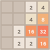

Junta los números hasta conseguir el 2048 en una casilla.
Cómo se juega: Usa las flechas del teclado para mover las casillas. Cuando unas dos casillas con el mismo número, sus valores se sumarán en una única casilla.
Consejos:
Piensa bien cada movimiento, no tienes límite de tiempo para conseguir el resultado final.
Desplaza los números más altos a una única esquina, así podrás juntar el resto con mayor facilidad.
Mueve las casillas sólo en tres direcciones, juntando los números alrededor de una misma esquina.
A partir de la esquina que hayas elegido, ordena los números siempre de mayor a menor.
Con estos dos principios podrás generar reacciones en cadenas para llegar hasta el 2048.
Ten en cuenta que no siempre las nuevas fichas que aparecen son un "dos".
El Juego 2048 es un pasatiempo que ha conquistado a jugadores de todas las edades. Si buscas jugar 2048 gratis online, has llegado al lugar perfecto. En este puzzle 2048, tu misión es combinar números hasta alcanzar el codiciado 2048. Pero, ¿qué hace que este juego sea tan especial? ¡Sigue leyendo para descubrirlo!
El Juego 2048 combina simplicidad y desafío. Con solo usar las flechas del teclado, mueves casillas numeradas en una cuadrícula de 4x4. Cuando dos casillas con el mismo número se juntan, se fusionan en una sola con el doble de valor. El objetivo es claro: llegar al 2048. Sin embargo, dominar el 2048 juego online requiere estrategia y paciencia.
Si te preguntas cómo ganar el Juego 2048, aquí tienes algunos trucos útiles:
Con práctica, podrás mejorar tu récord en este 2048 pasatiempo y tal vez superar el 2048.
Jugar al Juego 2048 en nuestro sitio es una experiencia sin complicaciones. No necesitas descargar nada, y puedes disfrutar de este 2048 juego online desde tu móvil o computadora. Es ideal para un descanso rápido o para entrenar tu mente mientras te diviertes.
El Juego 2048 es un puzzle numérico donde combinas casillas con el mismo número usando las flechas del teclado para llegar al 2048.
Visita https://jenishpatel14.github.io/es/juego-2048/ y usa las flechas del teclado para mover las casillas. ¡Es completamente gratis!
Mantén los números altos en una esquina, usa solo tres direcciones para moverte y planifica tus movimientos cuidadosamente.
Sí, el Juego 2048 está optimizado para móviles y puedes jugarlo directamente desde tu navegador en cualquier dispositivo.